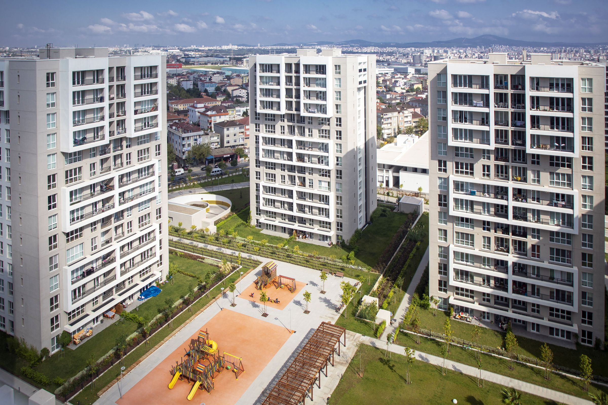

Vakıf GYO — Geleneğin Gücü, Geleceğin İnşası
Vakıf GYO
Geleneğimizden aldığımız güçle, geleceğin yaşam alanlarını inşa eder, paydaşlarımıza sürdürülebilir değer sunarız.
- 1996
- Türkiye’nin ilk Gayrimenkul Yatırım Ortaklığı Şirketi
- VKGYO
- Borsa İstanbul
- 9,48
- Kurumsal Yönetim Derecelendirme Notu
Portföy
-
VSancaktepe Merkez
Konut ve ticari ünitelerden oluşan projemiz, nitelikli peyzaj kurgusu ve ferah mekanlarıyla İstanbul’da özlenen geleneksel aile hayatını, bahçeli, geniş balkon ve teraslı, sosyal aktiviteli şehir hayatıyla birleştirerek, pandemi sonrası değişen konut beklentilerini karşılamayı amaçlamaktadır.


-
VYeniKonak
İş merkezi kulelerinin yükselmekte olduğu, İzmir Konak ilçesinde; ofis, ticari ve konut nitelikli VYeniKonak Projesi ile müşterilerimize konforlu, sağlıklı yaşam alanı sunmayı ve bölge potansiyelini artırmayı hedefliyoruz.


-
Tablo Adalar
İstanbul Anadolu Yakası'nda yer alan, Marmara Denizi ve Adalar manzaralı, merkezi konumdaki "Tablo Adalar" projemiz, 1+1'den 5+2'e kadar değişen konut tiplerinin yanı sıra, geniş balkon, büyük peyzaj alanı ve zengin sosyal donatıları bulunduruyor.


-
Cubes Ankara
Ankara Çukurambar'da yer alan Cubes Ankara Projemiz; 215.984,66 m2 kapalı inşaat alanına sahip 1+1'den, 6+1'e kadar değişen konut, home office, ofis ile otel, ticari ve sosyal donatı alanlarından oluşuyor.


-
İstanbul Uluslararası Finans Merkezi
İstanbul'da yükselen Finans Merkezi Projesi içerisinde yer alan VakıfBank Genel Müdürlük Hizmet Binası ve Tesisleri projemiz, 261.537 m2 inşaat alanıyla 52 ve 36 katlı iki kuleden oluşuyor.

-
Bizimtepe Aydos
Projede sosyal donatı alanları, açık-kapalı yüzme havuzları ve yaklaşık 80 dönüm peyzaj alanı bulunmaktadır.


Gayrimenkul Yatırımları

Yatırımcı İlişkileri
VKGYO3,27 ₺▲ %1,24
- Piyasa değeri
- 14,39 milyar ₺
- 52 hafta
- 2,34 – 3,27 ₺
Özel Durum Açıklamaları


Sürdürülebilirlik
Sürdürülebilirlik, Vakıf GYO’nun temel stratejilerinden biridir. Çevresel, sosyal ve yönetişim (ESG) prensipleriyle faaliyet gösteren şirketimiz, gelecek nesillere daha yaşanabilir bir dünya bırakmayı amaçlamaktadır.